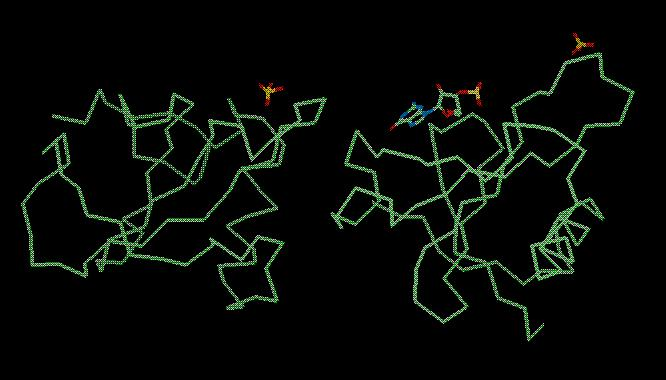
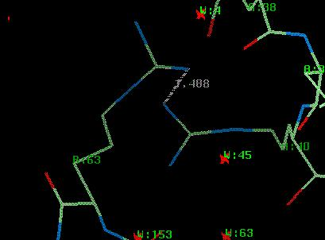
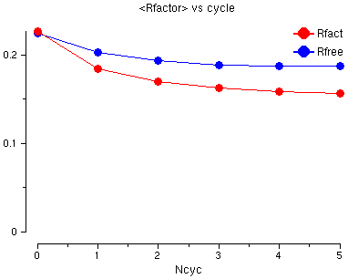
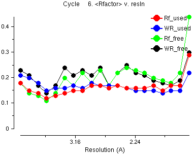
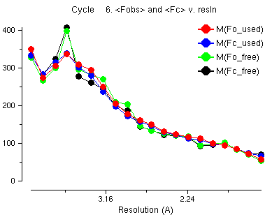
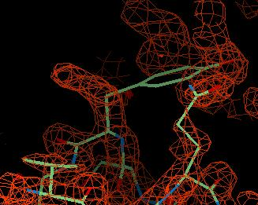
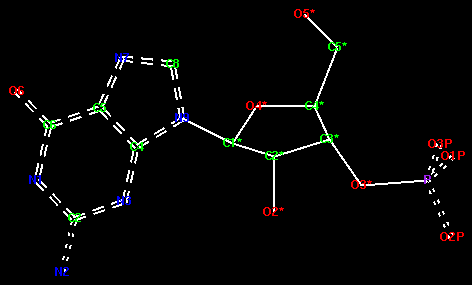
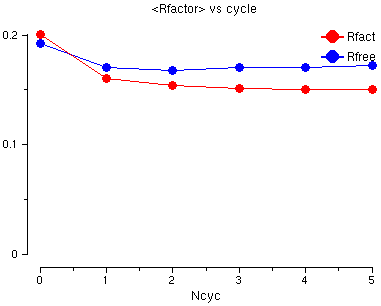

CCP4 Tutorial: Session 6 - Refinement
See also the accompanying document giving background information.
This is an introduction to the procedures for using Refmac5 to refine a crystal structure.
See also the documentation for Refmac5 and
Sketcher.
In the following instructions, when you need to type something, or
click on something, it will be shown in red.
Output from the programs or text from the interface is given
in green.
Outline of the Method
- Use Refmac to find any special restraints for the unliganded structure - for
example the disulphide bonds and cis-peptides. Check the results and make sure the
special restraints listed in the log file are correct.
- Run the Refmac program to refine the unliganded structure and
look at the result
- Create the geometry description of the ligand
- Use Refmac to find any more special restraints for the liganded form
- Run the Refmac program again to refine the liganded structure and
look at the result
The Problem
This example is to refine the protein RNAse Sa in its unliganded and liganded form, for which we know:
- It is a small protein; each molecule has one chain of 96 residues
- The space group is P212121
- There are three files of data, to resolution 2.5Å, 1.8Å
and 1.15Å, each of which contains data from one or more crystals
with or without ligands (native, native+2GP, native+3GP)
- For this tutorial, we are interested in refining the structure of the RNAse with two sulphate ions and
one ligand, guanosine-3*-monophosphate (GMP, or 3GP as it is called in the monomer library we will use)
- There are two molecules in the asymmetric unit (determined by checking the matthews_coef)
- The REFMAC review restraints procedure will suggest that there is:
- One disulphide bond in the protein: cys7-cys96
- One cis-peptide bond for gly26-pro27
The final structure (solved by Joseph Sevcik:
J. Sevcik, Z. Dauter, V.S. Lamzin, K. Wilson, Acta Cryst. D52 (1996) p327-344)
looks like this:

What are Restraints?
There are 1749 atoms in the asymmetric unit. If we describe each atom
using three positional parameters x,y,z and an isotropic temperature factor B
there are 6996 parameters. In the experimental data (see $DATA/rnase18.mtz)
there are 17991 reflections giving an observation-to-parameter-ratio of
17991/6996 = 2.57. This is not enough to refine all parameters as independent
variables. However we have a great deal of information about the
geometry of molecules - the bond lengths and bond angles etc. The
refinement program will set up restraints between related atoms
which say, for example, that the distance between
two bonded atoms must be close to the ideal bond length.
Refinement programs read libraries describing the expected geometry.
These contain information about the ideal bond lengths, bond angles,
planar groups etc. for the common chemical monomers which are
found in macromolecules (e.g. amino acids and nucleic acids).
If this information is incorrect you will not get a correct structure.
If your structure contains an unusual substrate molecule or a modified
amino acid, then there may be no suitable description in the library, and you
will have to provide one in the required style. This can be difficult; it is
essential you know the chemical definition of your ligand, (e.g. which
atoms lie in a plane, which bond type exists, etc). This knowledge must then be
written in the correct format for the refinement program to read. This can also be challenging,
so we will make the geometry description for the ligand to show how it is done.
The Data Files
Files in directory DATA:
| rnase.pdb | The refined unliganded protein coordinates |
| GMP.pdb | Idealised coordinates of the ligand molecule, guanosine-3*-monophosphate |
| rnase-3gp.pdb | The refined protein-ligand coordinates |
| rnase_bad.pdb | A test set of coordinates with errors introduced. |
| rnase18.mtz | An MTZ file containing three sets of experimental data extending
to 1.8Å, labelled FNAT SIGFNAT F3GP SIGF3GP F2GP SIGF2GP for unliganded protein, the protein
liganded with guanosine-3*-monophosphate (3GP) and with guanosine-2*-monophosphate (2GP), respectively |
rnase115.mtz | The experimental data and calculated structure factors
and phases for the unliganded protein to 1.15Å |
| rnase25.mtz | An MTZ file containing experimental data (including anomalous),
extending to 2.5Å, for the native protein and three derivatives (mercury, platinum and iodine), as used for
experimental phasing by MIR and
experimental phasing by MAD |
The output files in directory RESULTS:
| 3GP_mon_lib.cif | The monomer library description of 3GP |
| review.log | The log file from running Refmac5 to review restraints |
| rnase18_bad_refmac1.pdb | The output file from running Refmac5
to review restraints |
| refmac-unliganded.log | .log from Refmac5 refinement of unliganded RNAse |
6a) Check model geometry, create and review special restraints
For the tutorial a file called $DATA/rnase_bad.pdb
bas been generated, which has had some errors introduced. The residue ARG B:63
is now too close to ARG A:63. Also, all residues have been
shifted by up to 0.2Å.

We will use REFMAC5 in review restraints mode.
The program will look at the atom coordinates and decide where there are
disulphide bonds, cis-peptides and D-peptides. It will also calculate
the distance between atoms and if they are very close it will assume
the atoms are bonded and will make a make a restraint to say 'these two
atoms must stay close'. Of course this is not always right.
It will also add any absent atoms - if a residue
does not have the right atoms it will make them. REFMAC5
will help you by finding the disulphide bonds etc. automatically but you
MUST check that they are correct.
Exercise
From the Refinement
module select Run Refmac5.
In the Protocol folder, enter a Job title such as:
- Job title
Review restraints on rnase with bad geometry (refine tutorial step 1)
Then
- Do
review restraints
Now select the input coordinate file:
- PDB in
DATA rnase_bad.pdb
Look in the folder called Setup Geometric Restraints.
In here you can decide what to look for in the PDB file. We will use the defaults
- you do not need to change anything.
Now run the REFMAC5 program. From
the Run menu at the bottom of the window choose
Run Now.
The job will take a little time. When it has
finished, the job status will be "FAILED" - this is caused by WARNINGs (see
below) which should be considered serious, but which are part of the learning process
here. Look at the log file (click
on the name of the job, refmac5, in
the main window and use View Files from Job
and View Log Files).
Some interesting things in the log file:
WARNING : CIS peptide bond is found, angle = 16.01
ch:AA res: 26 GLY --> 27 PRO
....
WARNING : link:SS is found dist = 2.211 ideal_dist= 2.031
ch:BB res: 7 CYS at:SG .->BB res: 96 CYS at:SG
These things are correct, REFMAC5 has checked the
input protein molecule and found some cis peptide bonds and some disulphide
bonds, but there is also:
WARNING : description of link:ARG-ARG not found in the dictionary.
link will be created with bond_lenth = 1.400
This is not true, REFMAC5 will suggest making bonds between
the residues which are too close.
Now look at the output PDB file: use View Files from Job
and select rnase_bad_refmac1.pdb (this file can also be found in
the RESULTS directory).
At the top of this file is new information:
LINK NH1_ ARG A 40 NE__ ARG B 63 ARG-ARG
LINK NH1_ ARG A 40 CZ__ ARG B 63 ARG-ARG1
LINK NH1_ ARG A 40 NH2_ ARG B 63 ARG-ARG2
LINK GLY A 26 PRO A 27 PNCIS
SSBOND 1 CYS A 96 CYS A 7
LINK GLY B 26 PRO B 27 PNCIS
SSBOND 2 CYS B 96 CYS B 7
Now Quit from the window.
It is necessary to edit the PDB file to remove the
bad link information. There is an easy way to do this. From
the Refinement menu in CCP4i main window select
Edit Restraints in PDB.
Select the input file:
- PDB in
TEST rnase_bad_refmac1.pdb
Wait while the program reads the file.
In the window you will now see:
The space group and the symmetry operators for
the space group (you may need this information to define disulphide
bonds or links between molecules that are not in the same asymmetric unit).
The MODRES IDs and LINK modes provide additional information to describe
the molecule geometry. Definitions of MODRES allow you to modify a standard
residue description, e.g. to rename a monomer, or to modify MET to
include Se - the details are discussed in the
Refmac5 documentation. LINK definitions
describe ways to link two monomers, e.g. peptides co-valently
linked to substrates.
- MODRES - Modified Residues
This is a way to redefine non-standard residues. There is a monomer labelled
GMP in the RNAse coordinate file, which matches the dictionary definition of 3GP.
- SSBOND - Disulphide Bonds
The two disulphide bonds in RNAse are shown.
- LINK - Inter-Residue Bonds
The three bad bonds are listed.
- CISPEP - Cis peptides
The two cis-peptides in RNAse are listed.
You can delete the bad links by clicking on the
menu Edit Table and selecting
Delete Last Row. Do this three times.
It is also possible to add new things - try clicking on
Add Row.
We will stop using the rnase_bad coordinates, so you do
not need to save changes - Close the window.
6b) Refining the Unliganded Molecule
Exercise
From the Refinement
module select Run Refmac5.
Enter a suitable job title such as
- Job title
restrained refinement for unliganded RNAse (refine tutorial step 100)
Then
- Do
restrained refinement
using
no prior phase information
input
Also you will see:
 Generate weighted difference maps in
CCP4
format.
Generate weighted difference maps in
CCP4
format.
If you have a graphics program to look at the maps then
click this on and select a map format.
Now select the input files - the experimental data:
- MTZ in
DATA rnase18.mtz
and make sure you have correct data columns:
- FP
FNAT
SIGFP
SIGFNAT
and the coordinate file:
- PDB in
DATA rnase.pdb
Click on Run -> Run Now.
The job will take a little time.
When it is finished look at the log file (click on the name of the job,
refmac5, in the main window and use
View Files from Job and
View Log Graphs).
If you do not have a log file then click on
View Any File and set:
- Go to directory
RESULTS
File type
log CCP4 log
filename filter
*.log
Viewer
View Log Graphs
and then select file:
- File
refmac-unliganded.log
Go to the last table in the Tables in File
and click on:
- Rfactor analysis, stats vs cycle
You will see a graph of the R factor and the Free R factor
for the 6 cycles of refinement. The R factor is very good already
but both go down a little.

Also look at the Graphs in Selected Table for:
- FOM vs cycle
-LLG vs cycle
Geometry vs cycle
The FOM tells you how well the molecule matches
the experimental data and the Geometry tells you how well the molecule
obeys the geometry restraints.
Also, slightly up the Tables in File
list, select the last:
- Cycle 6. Rfactor analysis, F distribution v resln
This is information about the last cycle of refinement.
Have a look at:
- <Rfactor> v. resln

The red line is the average R factor versus resolution
for the data which is used and the green line is the Free R factor (for
the 'free' data which is not used). This is similar across the resolution ranges
- it does not go up for high resolution data. This is an example of
what is good about maximum likelihood refinement compared with the old-fashioned
least squares.
Also look at the graph:
- <Fobs> and <Fc> v. resln

This is a graph of the average observed structure factors
and calculated structure factors. You notice that at low resolution
the observed (red) and the calculated (blue) are not the same. At
low resolution the water atoms, which we can not see in the crystal structure,
are an important part of the structure factors. The refinement program
tries to model the water atoms by solvent scaling but it is difficult for
this data because some of the very low resolution data is missing.
To close the loggraph window click on the File
menu and select Exit.
Look at the header of the output MTZ file - click
on View Files from Job and select the file
rnase18_refmac1.mtz. In the file you will see:
* Column Labels :
H K L FNAT SIGFNAT FreeR_flag FC PHIC FWT PHWT DELFWT PHDELWT FOM
The new data in the file is:
| FC & PHIC |
the structure factors and phases calculated from the final coordinates |
| FWT & PHWT |
the 'best' structure factors and phases weighted by the maximum likelihood function |
| DELFWT & PHDELWT |
the 'best' structure factors and phases for a difference map |
| FOM |
figure of merit for PHIC |
If you selected the option to create output maps then
you can look at the maps created from the REFMAC output.
| ...FWT.map | the 'best' weighted map |
| ...DELFWT.map | the 'best' weighted difference map |
An example of these maps is shown below for a tyrosine
residue which is in the wrong place. The DELFWT map is the weighted difference map of
F(observed) - F(calculated) and looks like this:

Here you can see a large pink area of negative density
where the tyrosine side chain is now. This is saying that the side
chain should not be here. The large brown-red area of positive density
is showing where the side chain should be.
The FWT map is the weighted map and looks like this:

You can see region of density to the left of the tyrosine
which is where it should go.
6c) Create a Monomer Library Entry for the ligand 3GP
There are three ways to get a geometry description:
- There are over 2000 molecules in the REFMAC
library so your ligand may already be in the library. In fact there is a full monomer
description of the ligand in our example in the library, but that is too easy. We
will just have a look at it.
A BIG WARNING: the data in the library is from crystal
structures in the PDB database - these may not be correct or exactly the
same as your ligand so always check the bond definition, chiral centres, planar groups etc.
- If you have coordinates for the ligand in a PDB file,
it is possible to make a monomer library entry very quickly - we will
try doing this.
- If you have no coordinates for the ligand you
need to draw the molecule after which the programs will make a geometry description
and will also make a PDB file with coordinates. This can be
made easier if there is a similar molecule in the library - you can get
this molecule from the library and edit - we will also try doing this.
ad i) Exercise - Looking at the Monomer Library Entry for the ligand
From the Refinement
module select the Monomer Library Sketcher
task.
From the File
menu at the top of the window select Read File
and from the next menu select Load Monomer from Library.
In the Load Monomer from Library window, in the Choose Monomer folder, search:
- List
non-polymer
monomers - apply search filter:
guanosine
and select 3GP GUANOSINE-3*-MONOPHOSPHATE.
Select Run -> Run Now, and Close.
You will see the molecule displayed. You can
rotate it by holding down the left mouse button.
On the right of the window is a list of atoms - this list has the
element, the atom name and the oxidation state (the charge of the atom).
Below the list of atoms is a list of the chiral centres found in the molecule,
of which there are four.
Now look at the monomer library file. In the Main Window select the last job
which is called load_monomer.
Now select the View Files from Job
menu (on the right side of the main window) and select the file
3GP_mon_lib.cif.
In this file you will see a list of the atoms.
_chem_comp_atom.comp_id
_chem_comp_atom.atom_id
_chem_comp_atom.type_symbol
_chem_comp_atom.type_energy
_chem_comp_atom.partial_charge
_chem_comp_atom.x
_chem_comp_atom.y
_chem_comp_atom.z
3GP O6 O O 0.000 0.000 0.000 0.000
3GP C6 C CR6 0.000 0.831 0.906 0.061
3GP C5 C CR56 0.000 2.177 0.611 0.120
......
Further down the file is the list of bonds:
_chem_comp_bond.comp_id
_chem_comp_bond.atom_id_1
_chem_comp_bond.atom_id_2
_chem_comp_bond.type
_chem_comp_bond.value_dist
_chem_comp_bond.value_dist_esd
3GP C6 O6 aromatic 1.230 0.020
3GP C6 N1 aromatic 1.380 0.020
3GP C5 C6 aromatic 1.390 0.020
3GP C4 C5 aromatic 1.390 0.020
......
The words at the top of the list tell you what is in each column:
- comp_id
- this is the compound id - this is always 3GP.
- atom_id_1
- this is the first atom in the bond
- atom_id_2
- this is the second atom in the bond
- type
- this is bond type (single, double, aromatic, deloc)
- value_dist
- this is the ideal bond distance
- value_dist-esd
- this is the standard deviation for
the ideal bond distance
There is similar information on bond angle, torsion angle, chirality and planar groups.
The refinement program will try to make the ligand as defined in this file -
you can edit the file if you need to.
ad ii) Exercise - Creating a Monomer Library Entry from Coordinate File
From the Refinement
module select the Monomer Library Sketcher
task.
If you already have sketcher open from the previous exercise, delete any molecule that you
have displayed: from the Edit
pull down menu select Delete All Atoms.
For the next steps see the view_sketcher_1 picture.
From the File
menu at the top of the window select Read File
and from the next menu select Read PDB file.
Select the file:
- Go to directory
DATA
File
GMP.pdb
If there is a message querying the use of an existing library file (using LIBCHECK), click No.
You will see the molecule displayed. You can
rotate it by holding down the left mouse button.
On the right of the window is a list of atoms - this list has the
element, the atom name and the oxidation state (the charge of the atom).
Below the list of atoms is a list of the chiral centres found in the molecule, of
which there are four.
The picture of GMP below shows the correct delocalised and
aromatic bonds - edit your molecule accordingly. To change a bond to a delocalised bond,
you must hold down the Shift
key on the keyboard and click on the bond with the right mouse button.
It will step through single--double--triple--deloc--aromatic--metal.

Now create the monomer library. From the File
pull-down menu at the top of the window select
Create Library Description.
In the Create Dictionary Entry window, enter a job title such as
- Job title
library description from DATA GMP.pdb (refine tutorial step 210)
Select
- Create description from
displayed structure
Then enter the name of the ligand (this must be GMP
which is the name of the ligand in the PDB file which we will refine).
So:
- Unique identifier
GMP
Full name:
guanosine-3*-monophosphate
The names of files will be created automatically so you can then select
Run -> Run Now. Then
Close this window.
You must wait a little time - a program called LIBCHECK is running. When it has finished
the molecule is displayed again.
Now look at the new monomer library file. From the Main Window select the last job
which is called dictionary.
Select the View Files from Job
menu (on the right side of the main window) and select the file
GMP_mon_lib.cif.
In this file you will see a list of the atoms.
_chem_comp_atom.comp_id
_chem_comp_atom.atom_id
_chem_comp_atom.type_symbol
_chem_comp_atom.type_energy
_chem_comp_atom.partial_charge
_chem_comp_atom.x
_chem_comp_atom.y
_chem_comp_atom.z
GMP O31 O OP -0.660 0.000 0.000 0.000
GMP P3 P P 0.000 1.175 0.940 0.095
GMP O33 O OP -0.660 1.871 0.745 1.419
......
Further down the file is the list of bonds:
_chem_comp_bond.comp_id
_chem_comp_bond.atom_id_1
_chem_comp_bond.atom_id_2
_chem_comp_bond.type
_chem_comp_bond.value_dist
_chem_comp_bond.value_dist_esd
GMP P3 O31 deloc 1.510 0.020
GMP O32 P3 deloc 1.510 0.020
GMP O33 P3 deloc 1.510 0.020
GMP O3* P3 single 1.610 0.020
......
This list is not quite the same as for the monomer 3GP as it is in the Monomer
Library. Have a look at the differences and update as you see fit.
ad iii) Exercise - Creating a Monomer Library Entry by Drawing the Molecule
This section is optional. Alternatively you can go directly to
the next step - Review Special Restraints for ligand.
If you have no coordinates or other definition of the ligand then you must draw the
molecule in the Sketcher. Sometimes there may be a similar molecule in the library - you can
start from this and edit it. There is a guanosine molecule in the
library which we can use to make GMP (or, more accurately, 3GP).
Delete any molecule that you
have displayed: from the Edit
pull down menu select Delete All Atoms.
From the File pull-down menu
select Read File
and then Load Monomer from Library.
In the new window, from the folder Choose Monomer, select:
- List
RNA
monomers
Now you will see a list of RNA monomers. Click on the line:
- Gr Guanosine
Then click on Run -> Run Now and Close
the Load Monomer from Library window.
You must wait a little while before the molecule of guanosine is displayed.
To make 3GP you must delete the phosphate group on the O5* and draw a phosphate
group on O3*.
For the next steps see the view_sketcher_2 picture.
Make sure that the Mouse Mode (on the left of the Sketcher window)
is set to Edit Monomer.
From the edit tools on the left of the Sketcher window select the
'Delete atom' icon
from the edit tools on the left of the window.
Hold down the Shift key and click with the
left mouse mutton on the atoms O3T, O2P, O1P and P to
delete them.
To add the new phosphate group select the the 'Add a C atom' icon
from the edit tools. The atoms that you add will be
carbon atoms - you will change them later to phosphorus and oxygen.
- Make O3* the active atom by holding down the
Control key and clicking on it with the
right mouse button. It is now the flashing, active atom.
Add a new atom by holding down the Shift
key and clicking with the left mouse button
close to the O3* at the place where the new atom should go.
You now have an atom called C21 and it is the active atom. Click
close to this atom with Shift - left mouse button
to make one more atom. Add two more atoms.
You will need to make the C21 atom the active atom
(Control - right mouse button)
and then add the atom for each of those.
When you have finished adding atoms, click on the Do
nothing edit tool at the top left of the window; now you will not
make more atoms by mistake.
Now look at the end of the table on the right side of the Sketcher window.
The new atoms are C21, C22, C23 and C24, and each atom has the elment type C.
Change C21 to a P and the other three to
O.
The atom names are also wrong - change the names to
P, O1P, O2P and O3P.
The bonds within the phosphate are delocalised bonds, so click
Shift - right mouse button on the bonds between
P and all three O atoms, stepping through the bonds until they are 'deloc'
bonds.
Now we create the monomer library. From the File
pull-down menu at the top of the window select
Create Library Description. In the window enter the name
of the ligand (call this TEST3GP so you do not overwrite
the files you made before). So:
- Unique identifier
TEST3GP
Full name:
guanosine-3*-monophosphate
The names of files will be created automatically so you can then click
Run -> Run Now.
Close this window.
Wait while the program runs to build the dictionary
file. The molecule is drawn again. If necessary you can make
corrections and run again. To close the Sketcher window, select the
File pull-down menu and
Close Sketcher.
6d) Review Special Restraints for ligand
We will add the ligand to our refined unliganded structure.
In order to see what might happen, a file called $DATA/rnase-3gp.pdb
is provided, with the refined unliganded model plus 3GP.
We will use REFMAC5 in review restraints mode.
The program will look at the atom coordinates again. The
disulphide bonds, cis-peptides and D-peptides are already defined. It will also calculate
the distance between atoms and if they are very close it will assume
the atoms are bonded and will make a make a restraint to say 'these two
atoms must stay close'. Of course this is not always right.
Exercise
From the Refinement
module select Run Refmac5.
Enter a suitable job title such as
- Job title
review restraints for liganded RNAse (refine tutorial step 300)
Then
- Do
review restraints
Select the input coordinate file:
- PDB in
DATA rnase-3gp.pdb
Select the new library file that you made for 3GP (this can also be found on the RESULTS directory):
- Library
TEST 3GP_mon_lib.cif
Now run the REFMAC5 program. From
the Run menu at the bottom of the window choose
Run Now.
If all is well, the program should run without any warnings, apart
from those about hydrogens. Now we are ready for some real refinement.
6e) Refining the Liganded Molecule
Now we will use the monomer library description that we
created to refine the rnase molecule with the 3GP ligand.
Exercise
From the Refinement
module select Run Refmac5.
Enter a suitable job title such as
- Job title
restrained refinement for liganded RNAse (refine tutorial step 400)
Then
- Do
restrained refinement
using
no prior phase information
input
Also you will see:
-
Generate weighted difference maps in
CCP4
format.
If you have a graphics program to look at the maps then
click this on and select a map format.
Now select the input files - the experimental data:
- MTZ in
DATA rnase18.mtz
and make sure you have correct data columns:
- FP
F3GP
SIGFP
SIGF3GP
and the coordinate file:
- PDB in
DATA rnase-3gp.pdb
To use the geometry description file which you have made:
- Library
TEST 3GP_mon_lib.cif
Click on Run -> Run Now.
The job will take a while.
When it is finished look at the graphs from the log file (click on the name of the job,
refmac5, in the main window and use
View Files from Job and
View Log Graphs).
Go to the last table in the Tables in File
and click on:
- Rfactor analysis, stats vs cycle
You will see a graph of the R factor and the Free R factor
for the 6 cycles of refinement. The R factor is very good already
but both go down a little.

To close the loggraph window click on the File
menu and select Exit.
Back to the previous tutorial - Molecular Replacement.
Back to the index.
To find out more:
Refmac: http://www.ysbl.york.ac.uk/~garib/refmac
Libcheck: http://www.ysbl.york.ac.uk/~alexei/libcheck.html
CCP4: http://www.dl.ac.uk/CCP/CCP4
Prepared by Liz Potterton (lizp@ysbl.york.ac.uk) and Eleanor Dodson, July 2000
Adapted by Maria Turkenburg, 2002-2003